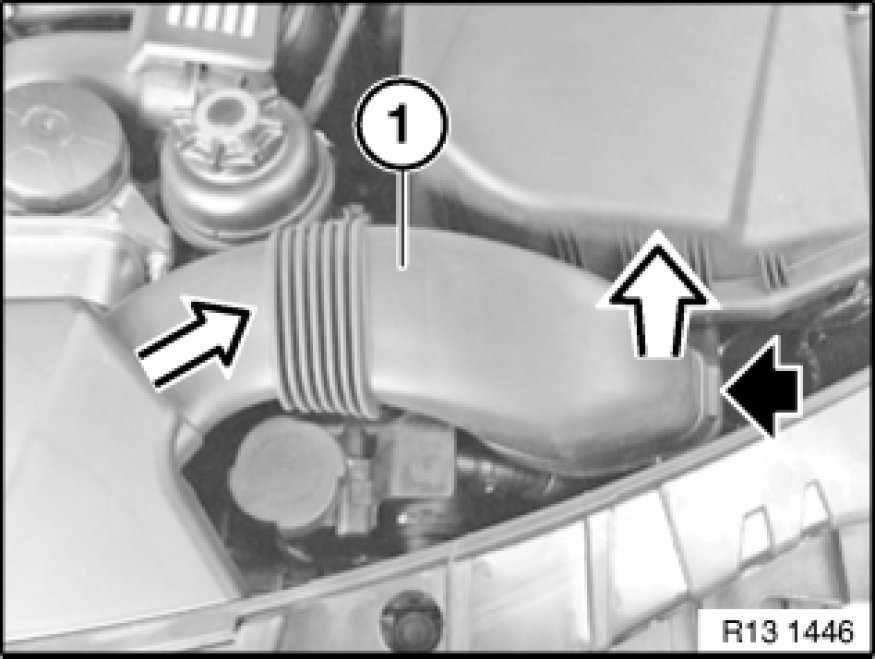
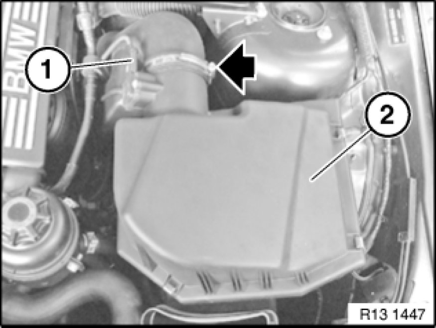
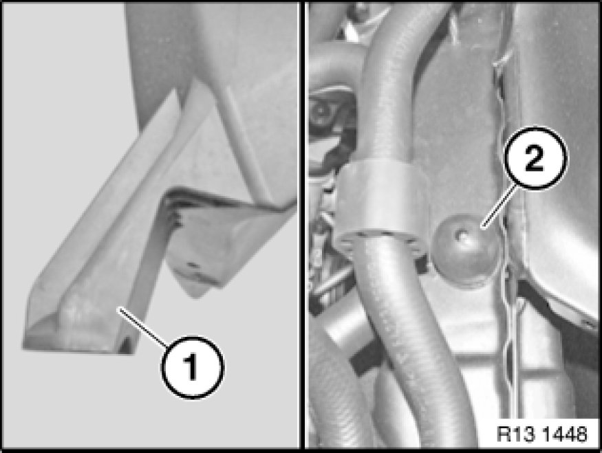

Removing And Installing/Replacing Intake Filter Housing (N52K)
13 71 000 - Removing and installing/replacing intake filter housing (N52K)

Necessary preliminary tasks:
- Switch off ignition
- Read out fault memory of DME control unit.

Unlock and remove gaiter (1).

Unlock plug (1) and remove.
Release clamp and detach air intake hose.
Detach intake filter housing (2) from bearings pins of rubber mounts in upward direction and remove.
Installation:
Make sure bearing pins are correctly seated in rubber mounts.

Installation:
Position holder (1) of intake filter housing on rubber mount (2).

Note:
Check stored fault messages.
Now clear the fault memory.